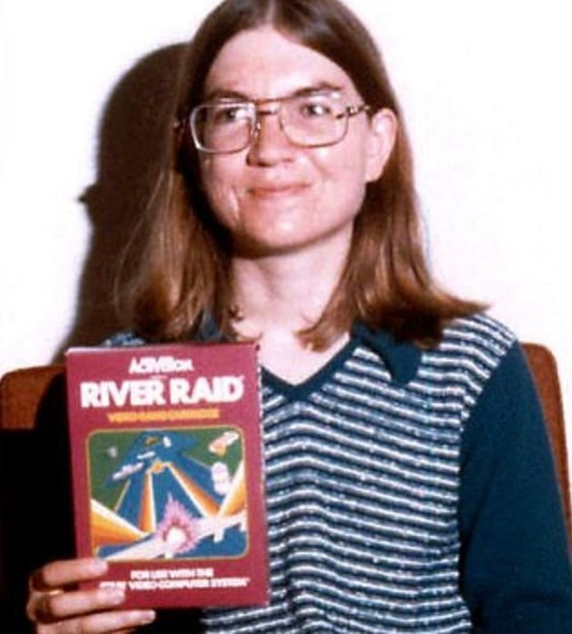
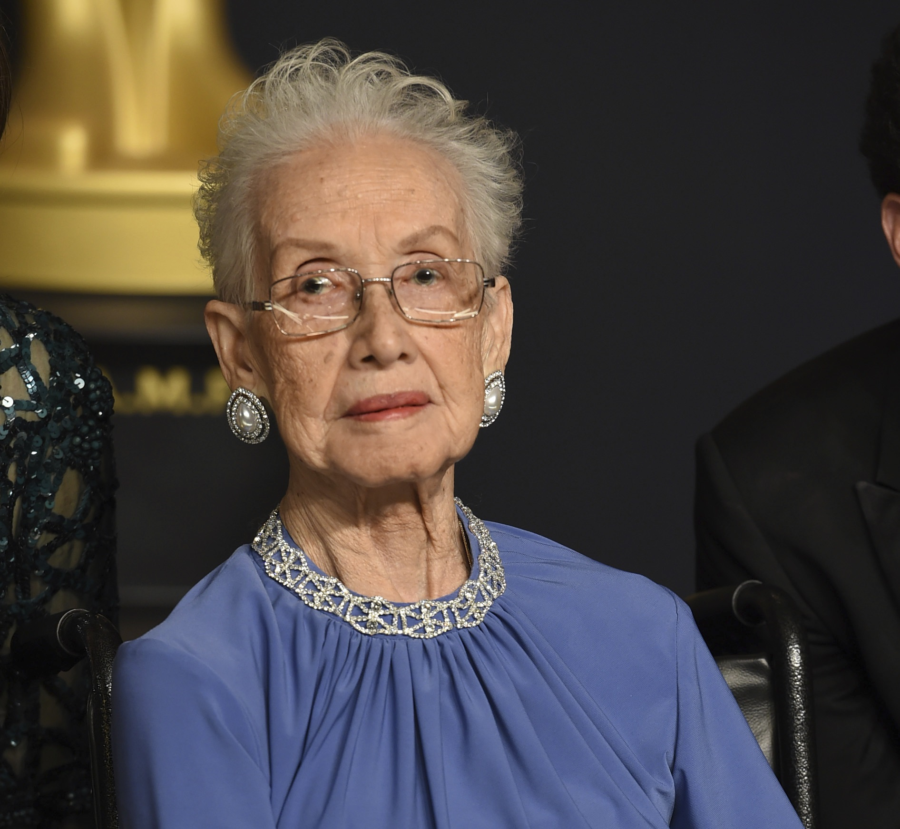

Mulheres Inspiradoras
Dentro da área da tecnologia, as mulheres sentem muita dificuldade para se estabelecerem em uma área extremamente masculinizada. Porém, muitas conseguiram quebrar as barreiras do machismo, racismo e do preconceito e são reconhecidas até hoje pelo seus feitos à tecnologia. então veja, as mulheres inspiradoras na tecnologia.
Ada Lovelace
Nascida em:
"Quanto mais estudo, mais sinto que minha mente nisso é insaciável."
Considerada mãe da computação, Ada King Lovelace idealizou o primeiro programa computacional. EM meados do século XIX, ela analisou e traduziu diversos materiais dos matemáticos da época e, a partir disso, ajudou no desenvolvimento do primeiro algoritmo do mundo.
Carol Shaw
Nascida em:
"Quando eu estava no ensino fundamental e médio, eu era bom em matemática. Participei de vários concursos de matemática e ganhei prêmios. É claro que as pessoas diziam: 'Nossa, você é boa em matemática — para uma garota'. Isso era meio irritante. Por que as meninas não deveriam ser boas em matemática"
Considerada a primeira mulher desenvolvedora de jogos digitais. Responsável por criar softwares para jogos e consoles, ela é a idealizadora das “fases” dos jogos de videogame que vão gradualmente aumentando a dificuldade. Ela também foi uma das primeiras colaboradoras da marca de consoles Atari e trabalhou em desenvolvedoras, como a Actvision.
Katherine Johnson
Nascida em:
"As meninas são capazes de fazer tudo o que os homens são capazes de fazer. Às vezes, elas têm mais imaginação do que os homens."
Katherine Johnson foi a primeira mulher negra a entrar em um curso de pós-graduação na universidade de West Virginia. Formada em matemática, trabalhou por anos na NACA (a atual NASA) e foi uma das responsáveis pelos cálculos da trajetória de voo do foguete Apolo 11 para o primeiro pouso na lua.
Grace Hopper

Nascida em:
"Um navio no porto é seguro, mas não é para isso que os navios são construídos. Navegue para o mar e faça coisas novas"
Ela foi a primeira mulher a ter um PhD em Matemática na universidade de Yale, trabalhou na área de tecnologia da marinha estadunidense e foi uma das criadoras da linguagem de programação COBOL, uma das utilizadas nos bancos de dados do mundo dos negócios, auxiliou na criação do primeiro computador comercializado para o público, chamado de UNIVAC e criou o termo BUG quando descobriu um inseto (mariposa) preso no Mark II.